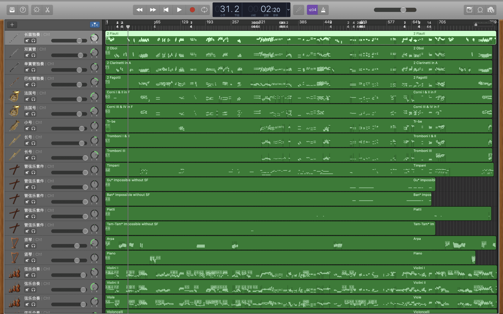
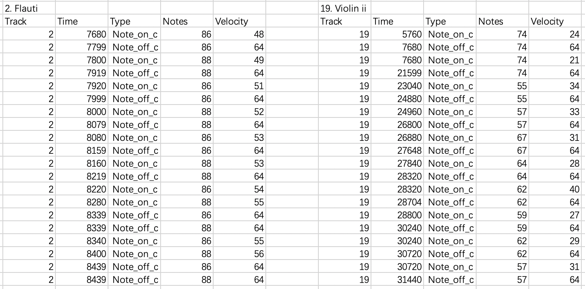
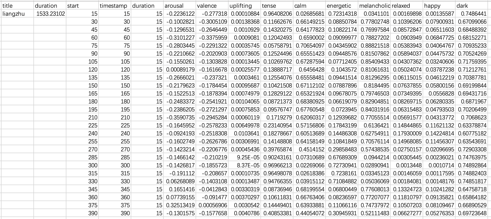
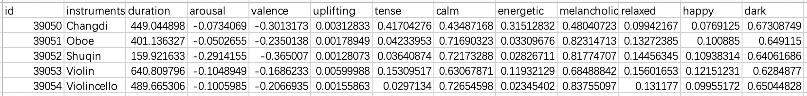
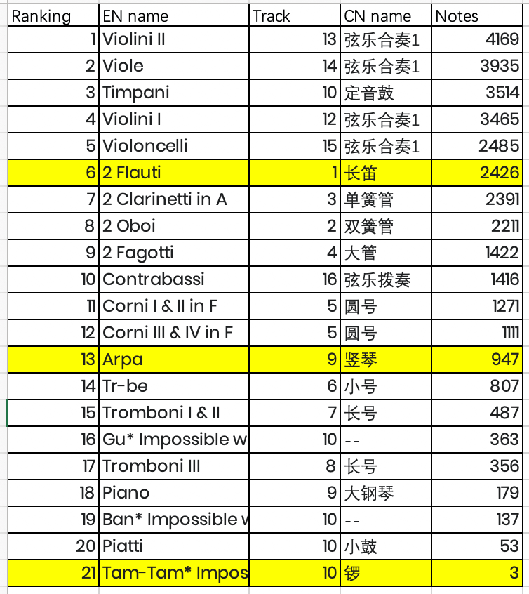
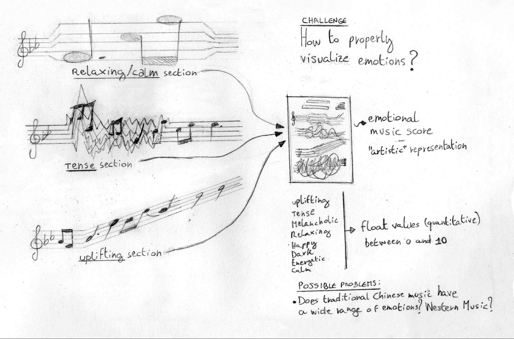
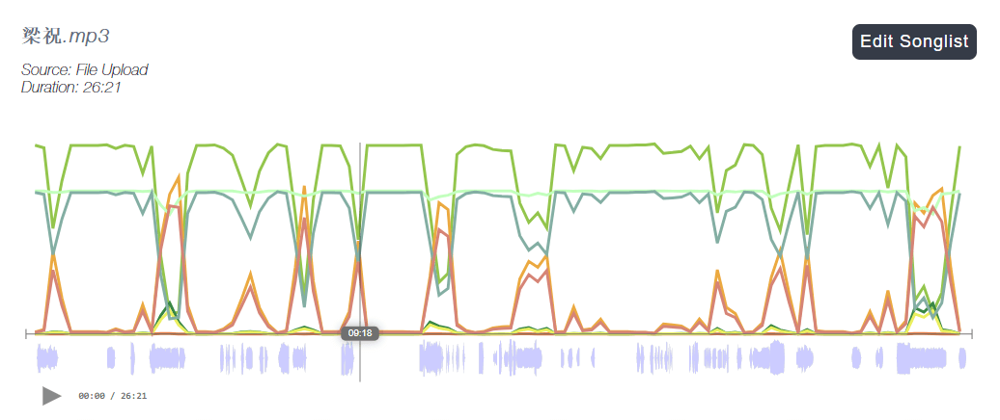
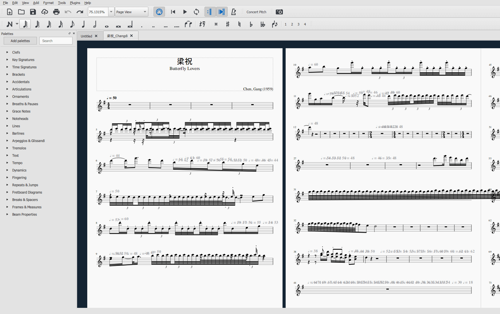

A concert of flowers
a datastory about China, its music and our emotions
Introduction
Around the topic of traditional Chinese music, our team has explored some ideas through research and brainstorming. Since then, we developed a particular interest in the ability of the music to evoke powerful emotional responses in listeners. We started our investigation with the aim of visualising the different aspects of the emotions in Chinese traditional music from many perspectives. You can find in this datastory the explanation of the six main hypotheses we’ve had during the exploratory phase of the design process, and our insights from the data visualization’s results.
Datasets
On the basis of the research carried out on the emotional model in music (Russell's 2-dimensional model), we understood that the parameters of arousal and valence are the starting point to calculate the emotional information of audio files. This kind of calculation though required to build complex algorithms that would have been out of our reach in terms of knowledge and time. For this reason, we decided to use an AI-based tool called Cyanite.ai to retrieve emotional data from songs and instrument audio. The obtained emotion parameters are arousal, valence, uplifting, tense, melancholic, relaxing, happy, dark, energetic, calm. The data has then been saved as a JSON file. We also employed a Traditional Chinese Instruments dataset with some additions to access data about materials and performance types.
We then started by getting the average values of each emotion for 24 traditional Chinese instruments. It can be noted the prevalence of some emotions compared to others.

Hypothesis 1
Instrument materials and emotions
Will the materials affect the timbre? We want to study whether the material of an instrument will affect the music it plays, and so, affect the emotion it expresses. First, we calculated the eight values of the emotions of each musical instrument. Then, we have associated each musical instrument with the types "string", “wood” and "bamboo". We selected one same emotion for each instrument and we used the tree graph to observe the proportion of all instruments based on its emotion value.

In the analysis of the emotion "calmness" and instrument’s materials, wood instruments (the brown rectangles) are overall associated with a lower degree of tension and a higher degree of calmness, with a more even distribution between instruments. Some specific bamboo (green) and string instruments (grey) have a large quantity of tension. Wood instruments have lower tension overall.

Some specific string and bamboo instruments have a large quantity of the value relax. The wood instruments are basically composed of Western instruments, in fact, we can also see the emotional differences between Chinese and Western instruments.

In the process of comparing each emotional value, we found that not every type of instrument's material has a strong correlation with a specific emotion, and so we decided to focus on other hypotheses.
Hypothesis 2
Performance styles and emotions
After the comparison between materials and emotions, we moved into another interesting area of investigation: Chinese traditional musical instruments’ performance styles and emotions. The first comparison in figure 1 is between the emotional values of 4 kinds of performance styles under the same emotion type. Then we highlighted the kind of performance style with the highest emotion average value (red dot) for each emotion row. With the yellow dot, there’s a confirmation that there is no significant difference (red & yellow dot) in the average value of each instrument in this category.
In the visualization of figure 2 we can see that bowed string and plucked string are the most suitable performance styles for expressing calmness in music performances. The second comparison is between the eight types of emotions under the same performance style (columns). The types of emotion with the highest average value in each performance style is highlighted with a blue dot. Also in this second analysis there is no significant difference (blue & yellow dot) between the instrument's performance style and the related emotion.
In conclusion, among all types of emotions, bowed stringed instruments are best for expressing calm and melancholy; percussion instruments are best for expressing dark; plucked stringed instruments are best for expressing calm; in the case of wind instrument, the emotion expressed depends on the type of instrument itself, and it has no correlation with the performance style.
Hypothesis 3
Do Chinese symphonic music have similar emotional tendencies to the instruments used in their performance?
Firstly, we obtained the MIDI file of Liangzhu which is one of the most popular Chinese Symphonic Music from midishow.com.
the MIDI file of Liangzhu opened in Garageband
Secondly, we extracted data of tracks, velocity, and notes from this MIDI file.
Extracted data of Flauti (left) and Violin (right)
Thirdly, we use Cynaite.ai to obtain the values of emotional parameters of Liangzhu and the instruments used in it.
The values of emotional parameters of Liangzhu
The values of emotional parameters of 5 dominant instruments in Liangzhu
Why start from Liangzhu? The ranking of the most popular Chinese symphonic music from music.163.com highlights that Liangzhu is one of the 10 most popular Chinese symphonic music. All Chinese people are familiar with this song no matter how old they are due to a famous love story of Liang Sanbo and Zhu Yingtai, which is similar to the story of Romeo and Juliet. Another reason why we chose this song is the data diversity, which improves the analysis accuracy to a certain extent. This song is 26 minutes long with 21 tracks (or instruments), including Chinese instruments and Western instruments. It means that there will be no situation where the analysis results are affected due to insufficient duration or insufficient types of instruments. This song contains 21 instruments with different numbers of notes. Here is the ranking of instruments in this song based on the number of notes.
The ranking of the instruments in Liangzhu based on the number of notes
(yellow for Chinese instruments)The emotional tendencies of the instruments Used in Liangzhu. We started analyzing five instruments in Liangzhu: Flauti/Changdi, Arpa/Shuqin, Violin, Violoncello, and Oboe. In the result:
- Changdi always shows higher Energetic, higher Tense, lower Calm, and lower Melancholic (see in figure below)
- Shuqin always shows higher Calm and higher Melancholic
- Violin alway shows higher Energetic and higher Tense
- Violoncello always shows higher Calm, higher Melancholic, lower Energetic, and lower Tense
- Oboe always shows higher Melancholic
the emotional tendency of Changdi
Do Those Instruments Have Similar Emotional Tendencies to Liangzhu?
Starting with Changdi, as we can see above, it always shows higher Energetic, higher Tense, lower Calm, and lower Melancholic.
Knowing that the velocity variable reflects the strength or pressure of instruments (Reference: ) we wanted to verify our hypothesis that when the Velocity of Changdi is increasing, Energetic and Tense of Liangzhu are increasing too, while Calm and Melancholic are decreasing.
As the next step we create a new variable called Correlation.
For example:
Correlation_Changdi_Energetic = delta(Changdi_Velocity) / delta(Liangzhu_Energetic) Correlation_Changdi_Tense = delta(Changdi_Velocity) / delta(Liangzhu_Tense) Correlation_Changdi_Calm = delta(Changdi_Velocity) / delta(Liangzhu_Calm) Correlation_Changdi_Melancholic = delta(Changdi_Velocity) / delta(Liangzhu_Melancholic)
So that,
if Correlation_Changdi_Energetic > 0, Changdi_Velocity and Liangzhu_Energetic are in positive correlation if Correlation_Changdi_Energetic < 0, Changdi_Velocity and Liangzhu_Energetic are in negative correlation if Correlation_Changdi_Energetic = 0, just discard this row because Changdi_Velocity doesn't change
In other words, we wanted to verify that:
-
There is a positive correlation
- between Changdi_Velocity and Liangzhu_Energetic (Correlation_Changdi_Energetic > 0)
- between Changdi_Velocity and Liangzhu_Tense (Correlation_Changdi_Tense > 0)
-
There is a negative correlation
- between Changdi_Velocity and Liangzhu_Calm (Correlation_Changdi_Calm < 0)
- between Changdi_Velocity and Liangzhu_Melancholic (Correlation_Changdi_Melancholic < 0)
Data of Changdi in Liangzhu
In conclusion, hypothesis 3 (Do Chinese symphonic music have similar emotional tendencies to the instruments used in their performance?) is correct to some extent. As the next step, we wanted to continue to verify whether the Correlation value of other dominant instruments in Liangzhu support our hypothesis or not, and see whether the larger number of notes that the instrument concludes, the larger the extent supporting our hypothesis. Due to the limited time for the project, we decided to explore the feasibility of other different hypotheses.
Hypothesis 4
Chinese songs and music score
Our next hypothesis would focus on showing the data related to one single traditional music piece, by extracting its emotional features. In particular, we wanted to impress the visualization of the emotions into a technical representation of music: the music score. We thought of two possible visualizations: one which would blend in with the musical notation, to serve as a functional communication for the musician of the emotional impact of what he’s currently playing; and another, with a more “artistic” approach, where the music score gets distorted by the emotional features, at the point of being unreadable.
Sketches of the ‘functional’ visualization of emotions in the music score
A more ‘artistic’ approach in visualizing emotions on the music score
To generate the basic musical score sheets, we inputted a MIDI file in MuseScore3, while to obtain the audio file for the analysis, we exported an mp3 using the same MIDI data.
Changdi instrument emotional values over time (song: Liangzhu)
The MIDI file of Liangzhu converted into music score in MuseScore3
In matching the emotion curves over time with the music sheet we soon encountered a problem of lack of data. The emotional values are sampled only at a fixed rate of 15 seconds, with the greater variations happening with an even lower frequency. This prevented a detailed representation for each line, or even for each page. Therefore, we ultimately decided to discard this hypothesis.

Calm, happy, melancholic and relaxed values corresponding to the first page of the music score
Hypothesis 5
How to represent a Chinese traditional song?
Starting from the analysis of the traditional Chinese song "Liangzhu", several hypotheses have been created on how to visualize the data both digitally and physically. The basic idea for each option presented is to be able to visualize what is not visible in reality: emotions. The first two sketches want, through the use of traditional Chinese symbols, to represent our main topic: traditional Chinese music.
In the first sketch the peony, a very important flower for Chinese culture, represents a song. For example, for the song of Liangzhu, we have identified through an analysis of the data concerning the emotions that its main emotions are dark, melancholic and tense. These three main emotions are represented by different forms which then create the main flower. The size of each part is proportionate to the emotion itself within the song. This visualization can work both physically and digitally. Our inspiration
The second sketch represents the traditional Chinese paper lantern. Each single song will be represented by a lantern, within an environment containing the most famous traditional Chinese songs. The Chinese lantern is, in this idea, transformed into its shape. it is divided into parts which, through their form, represent the emotion that is most present in the song. There can be two options for developing this idea: either by using the same shape as many times as necessary to have an exact proportion between the various shapes, or by changing their thickness, and therefore having a thicker emotion if more present and vice versa. The shapes sketched in the sketch can be better refined based on their connection with emotion. A site taken as a reference / inspiration for this idea was atlasofemotions.org. The lanterns, although it would become more complicated, could be interactive and reproduce the song itself if you pull the thread underneath them.
In the third sketch, the hypothesis is to use the physical musical score and transform it through a process guided by data into a visualization of emotions that are hidden in the song. Each of the eight emotions will be represented by a type of sketch / line (see example of mood lines). The prototype will be made via Arduino.
In the fourth sketch the representation becomes a network, where the song is at the center and will be connected with the respective emotions represented in the dimensions proportionate to their values. For this representation we hypothesized three different versions:
- digital display (the connection between the song and the emotion is displayed at the exact moment the song is played);
- physical visualization (the connection is static and proportionate to the values of the emotions present in the song, wires can be used as in this example;
- digital, physical and interactive visualization (the songs can be viewed on a wall through projections and by touching the song concerned, you can listen to it and see at the same time the connections with each main emotion).

{kind=link}
{kind=link}
{kind=link}
{kind=link}
{kind=link}
{kind=link}
{kind=link}
{kind=link}
{kind=link}
{kind=link}
{kind=link}
{kind=link}
{kind=link}
{kind=link}
Hypothesis 6
Harmonic differences in European and Chinese songs
The artistic concepts of China and Europe are totally different, and the ideas embodied in music and painting are also different. In Chinese ink painting, the painter will use the most strength and strokes to describe the main objects. In Chinese traditional folk music, there will be a leading instrument playing the main melody, while other instruments are used as the embellishment of the main melody. In the European orchestral ensemble, it emphasizes the unity and integrity of the movement and the harmony of the concerto. The main melody will be played by several major instruments together, just like in European oil painting, the complete picture will be depicted with the same strokes and colors, without a strong distinction between the primary and secondary picture levels.
European music has attached great importance to harmony since the Baroque period. Instead, in traditional Chinese music, the melody is the protagonist. In order to make the melody more expressive, a large number of decorative sounds, such as tremolo, have been developed in the performance of Chinese folk music. These decorative sounds are not used so frequently in western music.
The idea of comparing basic Chinese and European songs, as well as from research, even from previous hypotheses.The idea of comparing Chinese and European music was born from some aspects of the previous hypotheses. We compared Baroque, Classical and Romantic European music with Chinese traditional music (after 1980, during its modern "golden age"). The selected songs are the foundation of contemporary music culture, and they are all orchestral music.
MIDI files for the European song selection has been taken from kunstderfuge.com
- Beethoven, No.5 Symphony
- Bach, No.3 Suite
- Haydn, No.94 Symphony
- Mozart, No.40 Symphony
- Pachelbel, Canon DMajor
- Tchaikovsky, Nutcracker Suite Waltz of Flowers
- Verdi, Requiem Dies Irae
- Vivaldi, Le 4 stagioni


MIDI files for the Chinese song selection has been taken from midishow.com
- Gao Shan Liu Shui
- Yao Zu Wu Qu
- A Xi Tiao Yue


The hypothesis we wanted to verify with this song’s analysis was if there is a difference between the harmony of traditional Chinese songs and that of classical European songs. There are differences between the songs, but it is not possible to categorize them in the two different geographical areas, and it is for this reason that we decided to discard this hypothesis.
Conclusions
Hypothesis 3 is interesting to develop as a project, but it requires too much time for the analysis of more instruments, and so for the verification of the overall hypothesis. We believe that the most feasible and interesting one is hypothesis 5, in particular, we will focus our project on the basis of the first two sketches described: the peony and the paper lantern (or more in general, symbolic representations of traditional Chinese culture).